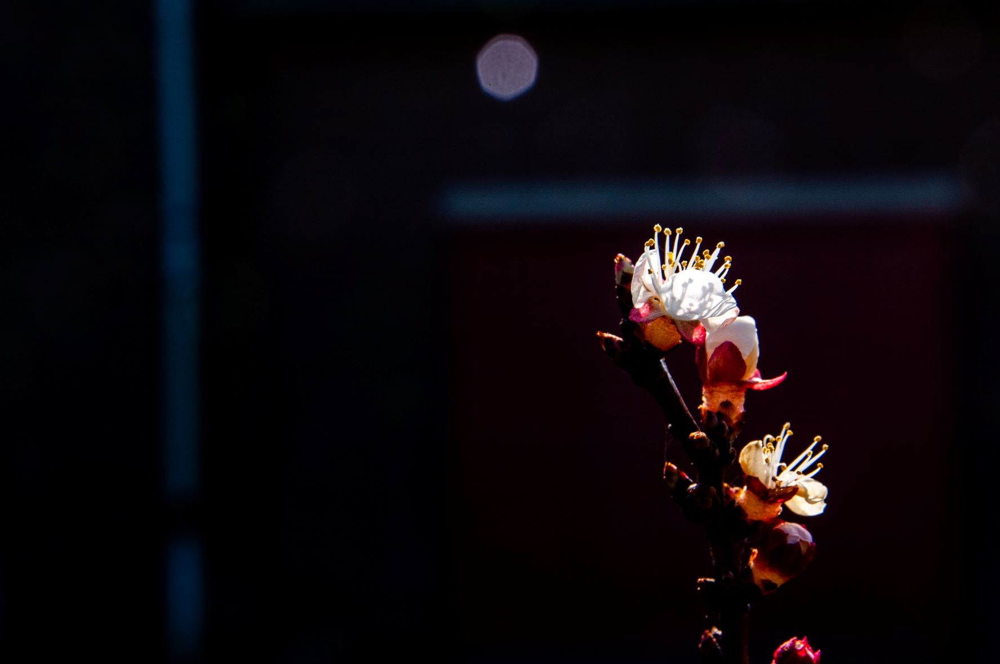
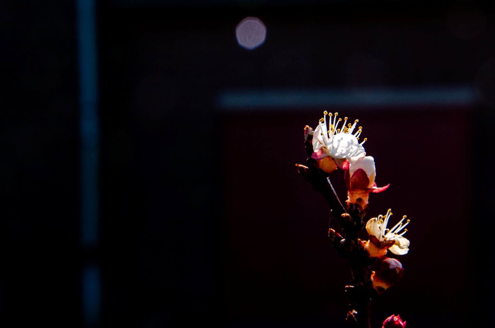
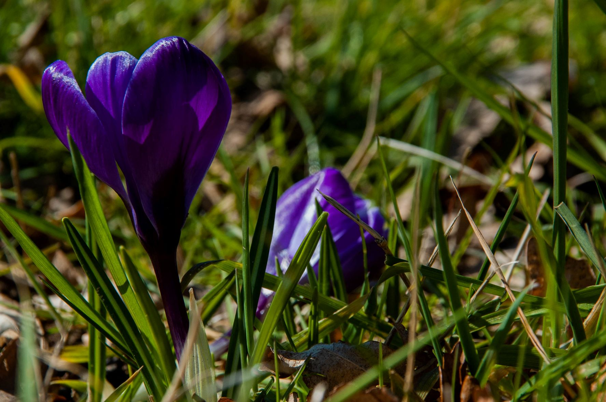
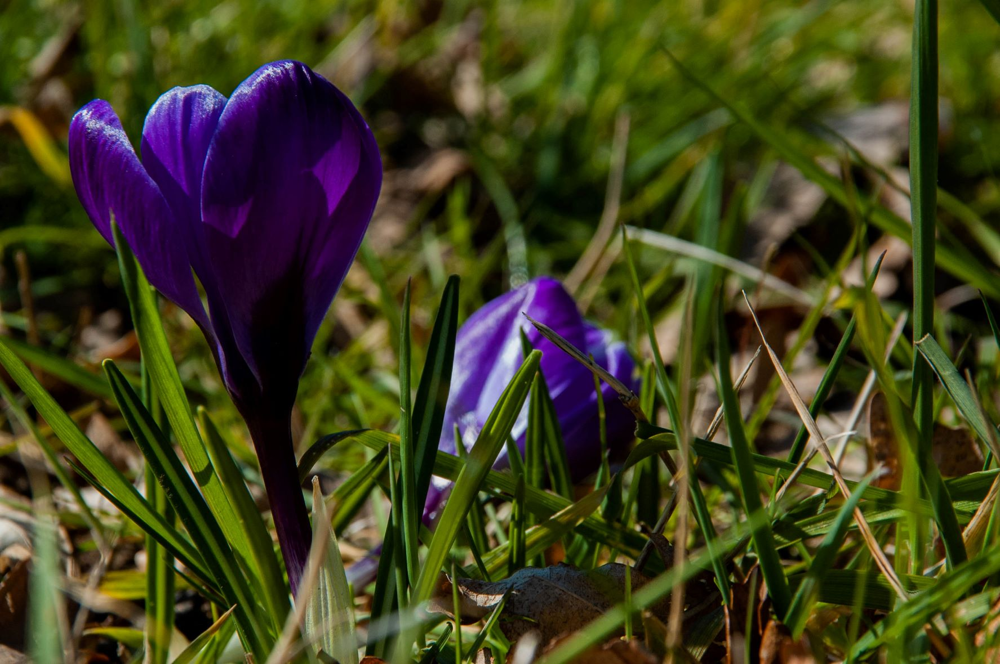
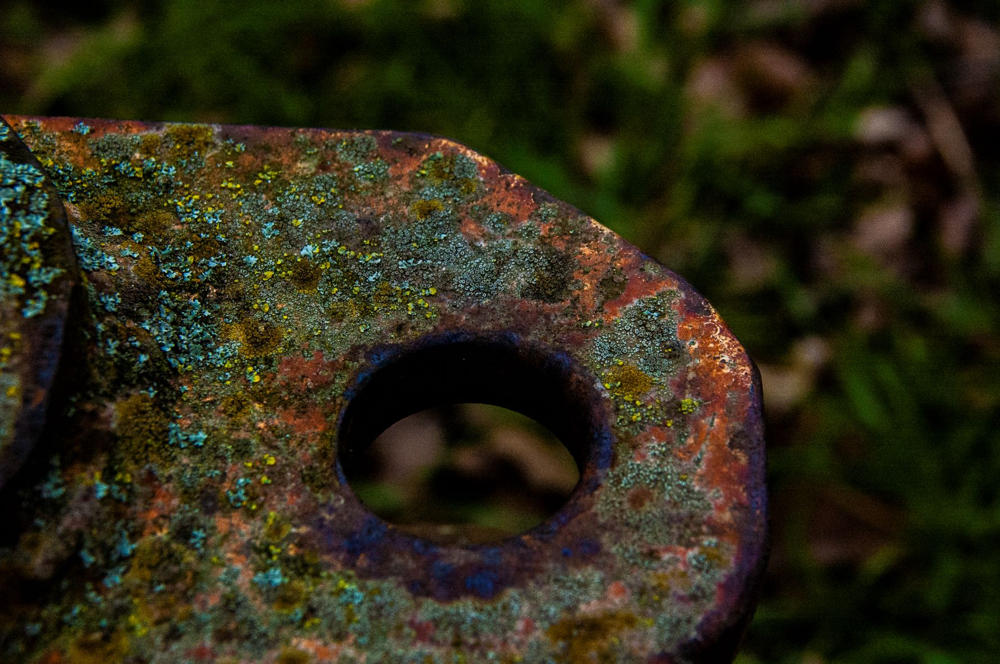
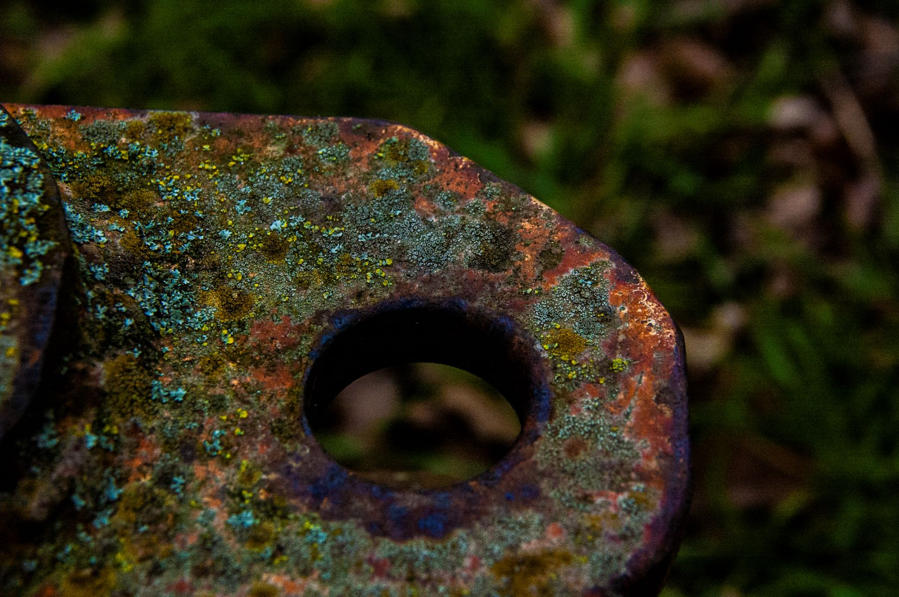
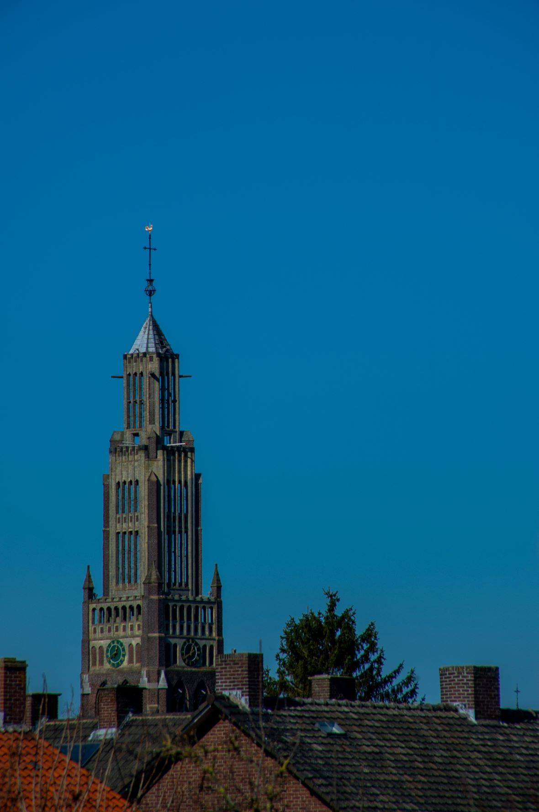
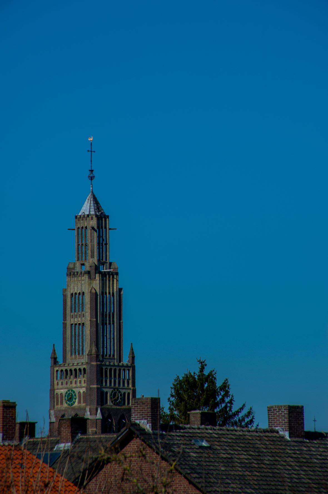
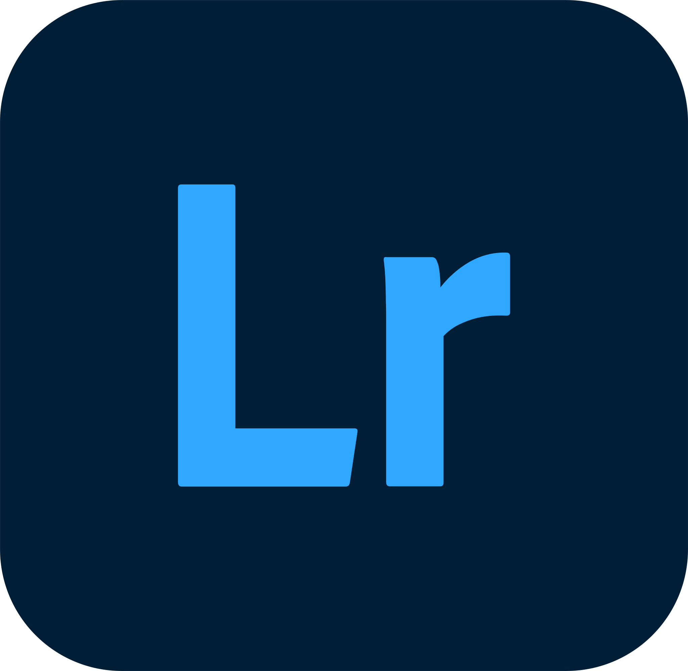
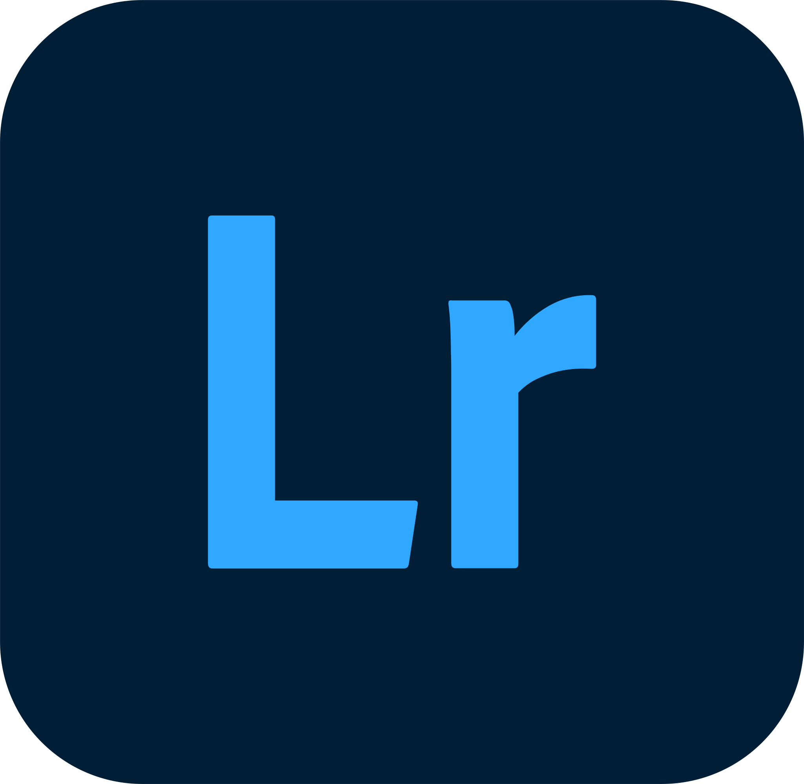

Über Hugo

Griaß enk!
Hallo, ich bin Hugo de Loo. Ich bin 21 Jahre alt, und studiere gerade an der Hogeschool Zuyd in Maastricht (NL). Ich bin im zweiten Jahr Communication and Multimedia Design. Dort lerne ich Fächer wie Fotografie, Grafisches Design, Research und Programmieren zu kombinieren, um so multimediale Lösungen zu erschaffen. Nicht für mich, sondern für die gewählte Zielgruppe des Projekts.
Communication and Multimedia Design, kurz CMD, sagt Ihnen vielleicht nicht viel. Man lernt in diesem Studium beispielsweise, wie man ein guter UX Designer wird. Einer, der nicht nur etwas Cooles macht, sondern ein Designer der die Zielgruppe analysiert, um so etwas noch Cooleres zu machen. Der Unterschied liegt darin, dass die Zielgruppe tatsächlich etwas von ihrem Produkt hat, statt sich zu fragen “Hä? Was soll denn das?”. Ein CMD-Student legt viel Wert auf ein Design mit einer guten wissenschaftlichen Basis.
Genug über das Studium, kommen wir zum Wesentlichen, mich :D
Meine Reise als Designer
Meine Reise begann im Studium HBO-ICT bei Fontys in Eindhoven (NL). Dort fing ich an Fächer wie Fotografie, Typographie und Branding zu besuchen. Leider wurden diese Fächer in dem von mir angefangenen Studium zu wenig unterbaut und darum habe ich mich entschlossen um die "Hogeschool" zu wechseln und ein Studium in Richtung des UX Designs zu beginnen, welche mehr mit meinen Talenten und Interessen übereinkommen. So fand ich meinen Weg zur Hogeschool Zuyd in Maastricht (NL).
Dort lerne ich, wie ich diese Vielfalt an Skills in multimedialen Lösungen umsetzen kann . So habe ich schon einen App-Prototypen entwickelt, basiert auf Research und Interviews. Weiters habe ich einen User Experience Prototypen für Gäste einer Ausstellung entwickelt und ich habe eine Multimedia Story über die Energiewende gemacht.
In den letzten vier Jahren habe ich nicht nur viel gelernt über mein Studium. Ich habe auch jemanden kennengelernt, Hugo: der Designer.
Genug geredet :) Time to Show off
Portfolio


Mit der Kamera kann ich auch was! :D
Fotografie


 


 



 

 


Schön, aber was kann ich jetzt genau?
Fähigkeiten
Sie haben jetzt einige meiner Projekte gesehen, und fragen sich bestimmt jetzt “Was kann der Hugo denn jetzt konkret?”. Diese Frage beantworte ich jetzt. Im folgenden Abschnitt finden Sie einige Fähigkeiten die ich besitze, persönlich wie im allgemeinen CMD Raum.
Persönliche Fähigkeiten
Ein guter Planer
Ich kann am Anfang eines Projekt ein Plan verfassen, womit ich am Ende alle meine Aufgaben rechtzeitig abgeben kann. Dieser Plan enthält auch die Möglichkeit für Änderungen, ohne das er als Konsequenz irrelevant wird.
Führungsstärke
Als Ergebnis meiner Erfahrung in der Führungsrolle einer Gruppe kann ich die Verantwortung dieser Rolle auf mich nehmen und sicherstellen das die Gruppe die vorgeschriebene Deadlines einhalten.
CMD Fähigkeiten
Mein Designprozess
Mit einem Mix aus sekundärer (Research von anderen) und primärer (Eigenes Research) Forschung kann ich gute Konzepte erschaffen und diese zu multimediale Lösungen ausarbeiten.
Die Perspektive der Zielgruppe
Meine Konzepte sind immer entwickelt aus der Perspektive der Zielgruppe. Die Zielgruppe steht bei der Entwicklung der Konzepte immer im Mittelpunkt.
Tools
Bei der Entwicklung multimediale Lösungen benütze ich viele Tools. Viele davon sind aus dem Adobe Paket, sowie einige Programmiersprachen. In unten aufgeführter Liste stehen die Tools, mit denen ich am meisten arbeite.


 
